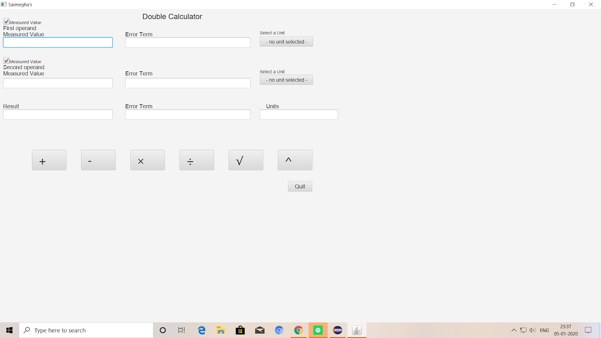

A general calculator consists of numbers and symbols which specify particular operations on the given two input numbers. The drawback of such a calculator is that if we enter two values having different units, they perform the selected operation and give the output. Sometimes that output may not be correct. For suppose, one of the inputs is in seconds and the other input is in meters and we are performing addition on the values then, the output given by the calculator is wrong as we cannot add two values containing two different units. Thus, the normal calculator is not suitable for the calculations where the units and their conversion is important. So, we are building a calculator which takes units along with the input value to avoid any mis calculations.
The main reason for us to build such a calculator is the failure of the Mars Orbital Mission done by NASA. The Orbital mission project was a failure because there was a small error caused by the miscalculation of the units. The cause was NASA scientists used different units whereas the developers who developed the calculator used metric units. Thus, there was a small error in the conversion and they were not able to launch the satellite in the orbit correctly. So, we should now develop a calculator which avoids such errors. The output of this calculator is rounded off to certain digits to avoid unnecessary error caused by considering a large number of digits after the decimal point.
The user interface of the calculator we developed looks like this:
The above picture is the GUI of the final Calculator project. Before this version there were three different versions of the calculator project. The first version was an integer calculator which had two text input boxes along with the add, subtract, multiply, divide buttons for the inputs which were only integers. The second version of the calculator was a double calculator which had two text input boxes along with the add, subtract, multiply, divide buttons for the inputs which were double values. The third version of the calculator contains the square root method and error terms were integrated into the calculator. The final version contains units along with the third version.
The GUI consists of two labels, four text boxes, two accordions, two checkboxes, add, subtract, multiply, divide, square root, power and also a quit button. The label specifies whether it is first operand or second operand. First operand consists of two text boxes one is for measured value and the other is for error term. The second operand also consists of two text boxes for measured value and error term. The accordions or the dropdown boxes used for each of the operands are used for the selection of units. The checkboxes above each operand specifies whether a given input is a measured value or constant. i.e. it specifies whether the given input consists of error terms or not. The buttons are used to specify the operation to be performed on the operands. The quit button is used to close the application.